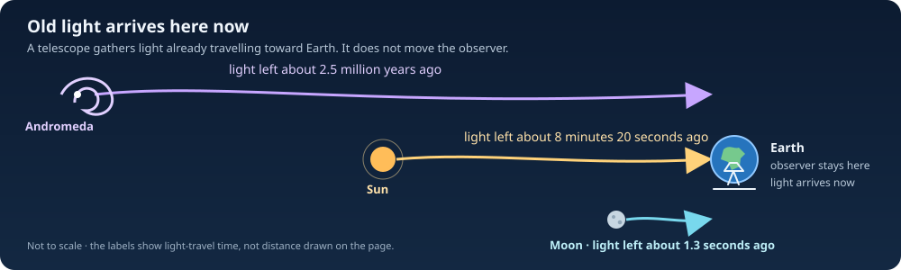

Travelling Through Space In Time#
A.R.G.O. and the Star of Bethlehem reference mission#
The story in one minute#
This is a science-fiction navigation book built with real physics. A.R.G.O. and its crew stay at home, while the crew’s experience ranges across events thousands of light-years away. Their onboard clock advances by minutes. In the Bethlehem reference mission, the crew will experience the distant Star event through this connection; the ship and crew remain aboard A.R.G.O. We take that mission as the story’s premise, then use equations to calculate what follows, what the known theories can support, and which new law the fiction must add.
A.R.G.O. stays on Earth while the crew looks outward. The luminous lines are a visual metaphor; they do not show a solved or physically propagating signal.
To plan the mission, we need more than an old date. Earth moves, and so do the Sun, planets, and Moon. We must say where A.R.G.O. stays, which remote events the crew experiences, how long the crew’s clock runs, what observers could see, and how information connects the crew to those events. The vehicle stays on its own worldline; each signal or observation path is modeled separately and continuously.
The story of the Star does not give us an exact date, map location, distance, or path across the sky. We will keep those missing details as questions instead of pretending we know them. The mission is our chosen scenario; the historical text is evidence about what people wrote, not proof that a ship was there.
The telescope’s ordinary look-back#
Think of a telescope as a quiet “Zoom through time”: it stays here while light arrives carrying an older picture of the sky. The telescope does not travel into the past; the light simply took a long time to get here.
Astronomy already gives us a friendly kind of “Zoom through time.” A telescope makes a distant object easier to see, but it does not carry us toward it. It collects light that is arriving here now. Because light takes time to travel, the view shows the object as it was when that light began its journey: about 1.3 seconds ago for the Moon, 8 minutes 20 seconds ago for the Sun, and roughly 2.5 million years ago for Andromeda. We look back without leaving Earth. NASA explains this as looking back in time (Webb; Hubble).
Here is the lovely twist: when we “Zoom” in on a galaxy, we zoom through space and time in our view. The galaxy is not travelling into our room. Its old light is. The telescope catches that light and turns it into a picture: a message from long ago, carried by ordinary light along an ordinary path. We have travelled in what we can see, not in our bodies—and we have received a message, not sent one to the past.

Old light arrives at one stationary observer. Horizontal lengths are not to scale.
This is the real inspiration for the mind-journey: the crew can look far away while their bodies stay home. The mission asks for a much bigger connection—to experience a selected event in Earth’s past and perhaps make a light visible to a witness there. A telescope’s ordinary look-back only receives light that can already reach us; it cannot send information to an earlier event. The proposed A.R.G.O. channel is a separate, unsolved part of the mission.
In short: we are building a navigation plan for a mission that treats time travel as possible. The book is free to imagine new physics; it earns that freedom by stating the new rule, calculating its consequences, and keeping it distinct from results already established in physics.
What this book does#
The mission plan needs a home location, selected remote events, signal routes between them, and a view from Earth that could match the light people described. A.R.G.O.’s clock advances locally while the signal follows its own connected path. Hazard checks apply to both the stationary craft and the signal path.
Astrarium can display a shared sky date, calculate positions for some planets and other objects, draw ordinary space-flight examples, and screen some parts of those paths for close approaches. When its time control runs backward, the program currently plays a regular route in reverse. It does not calculate a ship that physically travels to an earlier date. It has no time-travel engine model, no complete continuous route through a time-travel spacetime, and no full collision check for such a route. Those are work still to do.
The book uses equations and pictures to work through pieces of the challenge. A displayed path is an example until its motion is calculated using a stated physical model. A successful calculation shows what follows from its assumptions; it does not by itself show that a real engine can be built. The software’s date range, 3000 BCE to 3000 CE, is the range it can display, not a travel limit found in nature.
Reference mission: A.R.G.O. will create or observe the Star’s appearance#
The reference mission reads Matthew 2:1–12 as a sparse historical narrative and asks whether a signal from stationary A.R.G.O. could produce an appearance like the light the text describes. It is not a modern witness report: the text supplies no exact observation date, observer coordinates, angular measurements, range, spectrum, duration, or continuous track. The mission therefore uses candidate epochs and broad observer/viewing regions, with missing quantities left unknown. The passage says the Magi saw a star, traveled from the east, and later saw it go before them and stand over the place where the child was; whether this describes unusual apparent motion, a conventional celestial sign, literary/theological imagery, or something else is unresolved.
The linked discussion asks at 2:08 whether the Star could have been a UFO. Its answer distinguishes logical possibility from evidential support, then argues that Matthew need not imply extraordinary motion and favors a Jupiter interpretation. Astrarium keeps the mission identity fixed and uses that discussion to motivate comparison with natural-sky reconstructions, especially Jupiter. Candidate astronomical proposals include the 7 BCE Jupiter–Saturn triple conjunction and lunar occultations of Jupiter in 6 BCE; these are scholarly interpretations, not settled identifications.
The proposed mission is for stationary A.R.G.O. to be the source or controller of the light the Magi perceived. A valid signal model must connect the craft, the relevant remote events, and the observers with continuous, causally consistent signal paths; reproduce the apparent motion from the observers’ changing viewpoints; and explain any reported standstill without assigning the light a made-up range or altitude. The broad Bethlehem region is a candidate viewing area, not a verified house coordinate. Where the source text does not constrain a state, the solver must expose scenario ranges and show how results change. This is a signal and appearance problem, not a spacecraft intercept.
For this mission, known ephemerides describe where modeled celestial objects were, but do not provide a mechanism for linking A.R.G.O.’s experience to an earlier epoch. A temporal signal model must define its metric, field propagation, causal rules, and mapping from remote events to the crew’s local experience. The Star narrative defines the encounter; its missing date and viewing geometry remain explicit uncertainties. Known spacecraft and planetary trajectories are validation datasets, not alternate reference missions. UTC, dynamical ephemeris time, onboard proper time \(\tau_A\), and the remote-event label \(q\) remain distinct time quantities with explicit transformations.
Mission constraint: a star that appears to lead and stand still#
For the current mission model, A.R.G.O. is a stationary saucer-shaped material hull \(\mathcal H\). Its proposed local enclosure or field \(\mathcal B\) protects the observatory but does not transport the hull or crew. Any temporal channel carrying the crew’s experience or producing a remote appearance is a separate field with its own world-tube, energy, momentum, and interaction rules. A bubble boundary is not automatically a solid surface, and drawing one does not define a metric or temporal-drive law.
Translating the concept drawing into a vehicle envelope#
The drawing labels an outer diameter of 23.7 ft (7.22 m), a 14 ft (4.27 m) trampoline, a 7 ft (2.13 m) total above-grade height, and flexible solar panels rated at 300 W each with a footprint of about 4.86 by 2.30 ft (1.48 by 0.70 m). These are concept dimensions, not a surveyed CAD model. The circular footprint within the outer diameter is about 41.0 m²; the 14 ft central circle occupies about 14.3 m². If the full intervening annulus were available and the labeled 60° entrance sector were excluded, its ideal unobstructed area would be about 22.2 m². At roughly 1.04 m² per panel, that area could fit at most 21 panel footprints, or about 6.3 kW of nameplate capacity before spacing, access, curvature, orientation, shading, wiring, and equipment reduce it. The image does not specify an actual panel count or site-specific energy yield.
For site safety, the outer 23.7 ft diameter is only a first horizontal bound. The physical footprint must also include the entrance and steps, support legs, berm, solar-panel edges, rear hatch, and below-grade room; the drawing gives no complete underground depth or structural plan. Until those are measured, terrain and structure clearance remains unknown where the missing dimensions matter. The 300 W panel labels describe ordinary electrical generation; they do not specify or power a temporal channel. The 10 m by 20 m semiaxes used in a separate single-bubble density example are not fitted to this craft or its proposed signal path.
The narrative does not say that the light was a vehicle, that it appeared and disappeared in a modern UFO-report sense, or that it made several passes. If Astrarium models repeated appearances, each must arise from the same continuous field and signal history under the selected causal rules; the renderer cannot spawn duplicates as a substitute for dynamics. Compare each appearance’s angular position, brightness, spectrum, and timing with a defined narrative interpretation. No repeat count is supplied by the source.
The reference implementation has two linked parts:
Historical-text encounter. A provenance-backed record of what Matthew 2 says, kept separate from later interpretation. Candidate dates, observer locations, viewing directions, range, and duration are scenario inputs with explicit uncertainty; the software must not present them as measured facts. The encounter model predicts the apparent sky from candidate observer sites and states what optical signature a hypothetical A.R.G.O. manifestation would need to produce.
Temporal signal and mind-journey model. Define the stationary A.R.G.O. worldline, onboard clock, continuous signal/field paths, remote-event sequence experienced by the crew, energy and momentum transport, and causal closure. Keep the model explicit and replaceable; it is a required physics layer, not something Lambert transfers or ephemerides provide.
For the current mission, the crew’s proper time \(\tau_A\) advances along a stationary A.R.G.O. worldline while their mind-journey is represented by a continuous remote-event map \(q(\tau_A)\) and an explicit information/field path. A.R.G.O. must also produce a local optical manifestation at the witness event to be seen as a UFO. The earlier two-bubble traveler scenario instead tracks a test traveler whose exterior epoch may decrease along part of a closed timelike curve; it returns to its departure event and does not model this signal mission. Its equations and limitations are in Appendix B: Two-bubble traveler model and signal-path alternatives. Crew disorientation or reluctance to interact remains a story hypothesis, not a consequence of either model.
The lead mission should report whether the Star narrative constrains a unique temporal signal path. It does not: event date, viewing geometry, physical range, and apparent-motion record are missing. The book must show that underdetermination rather than fill it with invented telemetry. Historical trajectory datasets such as Apollo reconstructions can validate frames and interpolation, but do not constrain the Star narrative or establish a UFO interpretation.
Start with a source-and-interpretation ledger for Matthew 2, then implement scenario ranges, sky reconstruction, route constraints, and observer-view prediction. Use source-backed celestial data and known trajectory records to validate epoch conversion, frame transforms, interpolation, and route continuity. Test state estimation, spatial maneuver control, encounter reconstruction, and temporal travel behavior separately so success in one does not imply success in another.
The Bethlehem mission is the book’s central mind-journey: keep A.R.G.O. at home, reconstruct candidate skies and observer views at an uncertain ancient epoch, then ask what continuous information path and visible manifestation would be required. Competing natural-sky interpretations remain visible in the same analysis. The mission premise defines the experience and appearance to explain; it does not substitute for a physical channel model or a hazard-checked field path.
1. Physical status and the continuity requirement#
This proposal separates three claims that are easy to conflate:
Ordinary relativistic time dilation is established physics. A traveler can accumulate less proper time than observers on a chosen reference worldline and still move toward their future. This does not provide a route into an earlier Earth epoch.
General relativity admits mathematical spacetimes with closed timelike curves (CTCs), subject to global and physical caveats. A CTC is a continuous timelike worldline that returns to an event in its own causal past. A signal that reaches a past event also needs causal structure that allows the relevant pastward connection. Such solutions are not evidence that a usable channel can be built. Proposed constructions can require unusual stress-energy or assumptions whose physical realizability is unsettled. Hawking’s chronology-protection conjecture argues that quantum effects may prevent macroscopic chronology violation; it is a conjecture, not a proved universal theorem.
Astrarium’s mind-journey is a mission postulate. The software may explore it as a conditional model, but must not describe the postulate as a consequence of ephemerides, a solved GR signal path, or demonstrated neurophysics.
Use signature \((-+++)\). A.R.G.O.’s material hull follows a timelike curve \(z_A^\mu(\tau_A)\) parameterized by its onboard proper time, satisfying
For the mission configuration, \(\mathbf{x}_A\) is fixed in the selected local frame and \(\tau_A\) increases continuously. The field or information path is a separate curve \(y^\mu(\lambda)\). For freely propagating light, its tangent is null, \(g_{\mu\nu}(dy^\mu/d\lambda)(dy^\nu/d\lambda)=0\), with affine parameter \(\lambda\); it has no onboard proper time. A coordinate label changing toward an earlier date is physical only if the causal structure and field solution permit the signal to connect those events. Relabeling coordinates or drawing a smooth curve cannot change causal order.
For simulation, distinguish four things: the hull event \(z_A^\mu(\tau_A)\), the signal event \(y^\mu(\lambda)\), the remote event epoch \(q(\tau_A)\) represented in the crew’s experience, and the witness event where a visible photon is received. A decreasing \(q\) is a desired description of the mind-journey; it is not by itself a physical drive law. The model still needs a field equation, a continuous signal solution, a source and energy budget, a clock map, and rules for interactions and causality.
A moving-mouth traversable wormhole is mentioned as one conditional way a signal might take a shorter path while A.R.G.O. stays home. This book has not solved a wormhole signal route or its clock matching. The separate two-bubble traveler comparison and its equations are in Appendix B; they do not provide the signal shortcut required by the mission.
Continuity axiom. Every material, signal, or field path must be one connected curve on a single parameter interval, with continuous event and tangent at joins. A.R.G.O.’s hull state and clock remain continuous along \(z_A(\tau_A)\); a light/field path remains continuous along \(y(\lambda)\). The remote-event map \(q(\tau_A)\) must be continuous and agree with the endpoint events reached by the solved channel. It cannot be an arbitrary interpolation through epochs unsupported by the metric and field dynamics. No path may jump between dates or splice disconnected samples and call them one journey.
The continuity axiom is necessary but not sufficient for navigation. Check the signal/field path against matter and metric structure at the same spacetime events, and separately check A.R.G.O.’s stationary site envelope. A visible appearance additionally requires a signal reaching the witness and a calculated local optical signature. Propagate uncertainty in the metric, field, source, event dates, and observation geometry. If the causal model or field solution is unspecified, both reachability and clearance remain unknown.
The mind-journey: local clock, remote viewpoint#
The crew’s bodies and clock stay aboard A.R.G.O.; their conscious viewpoint follows a modeled sequence of remote observations. In this mission premise, that sequence is the journey. The crew lives through it in minutes of onboard time while the viewpoint ranges through distant places and dates. This is a postulate about the experience we want the model to represent, not a claim that consciousness has a known independent trajectory through spacetime.
The diagram offers three ways to keep the pieces straight: a 2D sky view, a 3D map of locations, and a 4D spacetime view that adds time. Its slider moves through an illustrative sequence of remote events. The dotted connection is marked unsolved because no physical channel has yet been calculated.
In flat spacetime, a light signal from 1,000 light-years away arrives after about 1,000 years on clocks at rest with the endpoints. A photon’s path has zero proper time, but this does not make the receiver’s wait zero. Therefore the desired experience—minutes for the local crew while their viewpoint follows distant events—requires a new information path or spacetime geometry, not ordinary light propagation.
Model three things independently:
A.R.G.O. worldline: the craft remains at its home location; its proper time \(\tau_A\) advances normally.
Signal paths: outgoing and incoming information follow continuous null curves in the selected metric. A one-way signal can show or announce a distant event; communication or interaction needs a return channel too.
Remote viewpoint: the crew’s experience is indexed to observations associated with a distant event. The model must specify what information reaches them and how that information shapes perception; a remote viewpoint does not move their bodies from A.R.G.O.
For remote events separated by exterior distance \(D\), define \(\Delta\tau_A\) as the onboard time over which the crew experiences the linked observations. The requirement \(D=1{,}000\) light-years and \(\Delta\tau_A=5\) minutes is a target for the chosen information model, not a locally measured photon speed. The simulator must return the remote event sequence, signal paths, local clock interval, viewpoint mapping, and uncertainty. A traversable wormhole is a clear hypothetical shortcut for information while the ship remains outside; a warp metric or accessible extra-dimensional channel would require its own field equations and source assumptions. Dark matter does not presently provide such a channel. Ordinary curved-space light propagation still follows the causal structure of its metric; a drawing or time slider cannot stand in for that model. Appendix B section 3.1 now works through a conditional stationary-ship wormhole signal: it calculates a smooth mouth-clock offset, then separates that kinematic input from the still-unsolved throat metric, optical path, and crew-experience map.
A.R.G.O.’s proposed quantum drive: an entangled chronal echo#
Now let the science fiction begin. A.R.G.O. carries two matched quantum resonators whose fields are prepared in a two-mode squeezed state,
The parameter \(r\) sets the shared excitation level and \(\phi\) sets the relative phase. In the fictional drive, a controlled interaction \(H_{\rm int}(t)=g(t)\,\hat O_A(t)\hat O_B(t)\) couples the resonators, in spirit like the boundary interaction in the Gao–Jafferis–Wall construction. A.R.G.O.’s compact resonators are not those boundary theories; the interaction is a design postulate that must be given a microscopic Hamiltonian and energy budget. Entanglement helps prepare and read the channel; it is not the channel and cannot send a chosen message by itself. The story asks the coupled state and geometry to create a small traversable throat. A.R.G.O. and its crew stay home. A low-energy information-bearing field follows the throat’s continuous path, and a local neural interface turns the arriving field into a lived remote viewpoint.
There is a real mathematical seed for this device. In a particular theoretical setting, Gao, Jafferis, and Wall showed that coupling two boundaries of an entangled black-hole system can create negative averaged null energy and make an Einstein–Rosen bridge traversable. A.R.G.O. extends that result to compact resonators and a useful signal channel; neither extension follows from the paper. The boundary coupling is essential in the mathematical example—entanglement alone does not open the passage. ER=EPR inspires the geometry; the traversable-wormhole construction inspires the control interaction.
The key speculative step is not a device that flips time like a film reel. It is a spacetime with a continuous chronal echo: the signal always advances along its local future direction, while the chosen Earth-time coordinate decreases along part of its route. In ordinary globally ordered spacetime, no such route exists. In a spacetime containing a closed timelike curve (CTC), a future-directed signal can return to an event in its own past. The crew’s proper time \(\tau_A\) still advances. The remote event label \(q\) can decrease only because the signal path passes through a region where this coordinate is not a global clock.
For a first navigation target, let \(T_A\) be the crew’s mission duration and let \(\Delta Q\) be the historical interval to be sampled, both in the same units. A.R.G.O.’s control schedule asks the channel to realize
This equation is a boundary condition on the chronal echo, not a separate reverse-time switch. It tells the field solver which remote events the crew should experience; it does not solve the field equations or prove a route exists. The proper calculation would find a metric \(g_{\mu\nu}\) and a field solution \(\Psi\) together:
The first equation asks the field’s renormalized stress-energy to support the geometry; the second propagates the information-bearing field through that geometry. In an ordinary globally hyperbolic region, a retarded Green function \(G_{\rm ret}(x,x')\) maps a source pulse \(J(x')\) to a received field \(\Psi(x)=\int G_{\rm ret}(x,x')J(x')\,dV'\), with support only along causal paths to the future. A chronology-violating spacetime may not have a well-posed global initial-value problem or a unique retarded Green function. A.R.G.O.’s model must therefore supply field boundary conditions and a self-consistency rule at its chronology horizon before the signal is computable. Work on quantum fields at compactly generated Cauchy horizons shows that the usual Hadamard-state construction can fail there; this is a serious stability and predictivity challenge, not a detail the story can skip. Kay, Radzikowski, and Wald’s analysis. Quantum entanglement may set boundary correlations or help prepare the source state, but cannot put an earlier event inside the field’s support by itself. The exterior return time and past offset must also close a loop with a safe margin as described in Appendix B.
One useful geometric starting point is the Morris–Thorne metric for a static, spherical wormhole,
For a simple zero-redshift example, choose \(\Phi=0\) and \(b(r)=r_0^2/r\), where \(r_0\) is the throat radius. In units where \(c=G=1\), the Einstein equations give \(\epsilon=b'/(8\pi r^2)\) and \(p_r=-b/(8\pi r^3)\). Substituting this shape function and restoring SI units gives, in the static orthonormal frame, \(\epsilon(r)=-c^4r_0^2/(8\pi G r^4)\) and \(p_r(r)=-c^4r_0^2/(8\pi G r^4)\). At the throat, \(\epsilon+p_r=-c^4/(4\pi G r_0^2)<0\): the null energy condition is violated. For a one-metre throat, \(\epsilon(r_0)\simeq-4.8\times10^{42}\,\mathrm{J/m^3}\), with \(|\epsilon+p_r|\simeq9.6\times10^{42}\,\mathrm{J/m^3}\). This is an actual calculation for a deliberately simple, static geometry, not an A.R.G.O. engine design and not yet a time machine; a suitable mouth history and global causal structure would have to be added to create a CTC. The embedded calculator shows how the required local density scale changes with throat size. Quantum-field constraints make macroscopic, long-lived negative-energy arrangements extremely difficult; the familiar traversable-wormhole results do not establish a practical source. Morris and Thorne’s traversable-wormhole analysis lays out the geometry; Ford and Roman’s quantum-field constraints show why a macroscopic throat is a severe burden.
There is a second, stricter gap: the standard moving-mouth wormhole does not produce this negative slope. Let \(T\) be exterior time at the stationary mouth and \(q\) exterior time at the moving mouth. With an ideal equal-clock identification, the matched events satisfy \(\tau_B(q)=T+C\), where \(\tau_B\) is the moving mouth’s proper time and \(C\) is a constant clock offset. Differentiating gives
That geometry can place an exit in the past while preserving the order of successive mouth events. A.R.G.O.’s schedule therefore needs the selected CTC path itself to carry a continuous signal through a segment where Earth-coordinate time decreases as the crew clock advances. The moving-mouth calculation alone does not supply that segment or the signal solution. A chronal echo is the name for this missing spacetime-and-field solution, not a claim that entanglement or phase conjugation reverses causality.
For one scalar sensory signal \(s(q)\) indexed by remote event time, a simple finite-bandwidth channel can be written
where \(G_{\sigma_q}\) is a normalized response kernel of remote-time width \(\sigma_q\) and \(0\le\eta\le1\) is the channel amplitude efficiency. In the ideal narrow-kernel limit, the output samples the remote record at \(q(\tau_A)\). A real version must calculate \(K\) from the metric, field, resonator coupling, and decoder; the Gaussian kernel is only a tractable noise model. Clock jitter \(\sigma_\tau\) contributes remote-event uncertainty \(\sigma_{q,\rm clock}\simeq R\sigma_\tau\), where \(R=\Delta Q/T_A\). For a historical sighting, that uncertainty must be smaller than the time resolution of the event being reconstructed. In the 2,000-year/five-minute example, \(R\simeq2.10\times10^8\): a 1 ns onboard timing error becomes about 0.21 s in the remote timeline. Preserving 30-fps frame order requires resolving crew-time intervals of about 0.16 ns per source frame, with timing jitter comfortably below that.
The complete mission needs a two-way channel and a separate visible-light leg. In compact form, its event chain is
The first kernel delivers a control or probe field to the selected historical event \(X(q)\); there it produces the proposed optical pattern and sends observation data back through the second kernel. Every arrow must have a continuous path in the same spacetime model. The Bell pair supplies neither kernel by itself. If the two kernels and the observer light form a causal loop, their outputs must satisfy the chosen CTC consistency rule, as well as energy, momentum, and collision constraints.
The earlier-event output is a sequence of records from progressively earlier events, not a microscopic reversal of every quantum state. The neural interface must decode the arriving field continuously without requiring the crew’s neurons themselves to execute a reversed microscopic history.
The calculator also treats a demanding reference case: an uncompressed 1920×1080, 24-bit color image at 30 frames per remote second, plus 48 kHz, 16-bit stereo audio. These are familiar media formats, not required biological vision specifications. They make the bandwidth cost visible. Compression and sparse/event-based scene descriptions can reduce the payload, but their required scene information and acceptable losses must be specified rather than assumed away.
In A.R.G.O.’s fictional operating model, quantum entanglement is the shared correlation resource, a calibrated clock network supplies timing references, negative-energy stress supports the transport geometry, the chronal echo is the continuous field path, and a neural interface turns the arriving signal into experience. Those are separate parts of one device. Entangled correlations are experimentally established. Traversable throats have mathematical models in specialized settings. The compact source, controlled time displacement, chronal-echo field, and neural decoder are the story’s new physics. Entanglement can help compare quantum measurements but does not synchronize clocks by itself or send information to the past.
The quantum state must also be consistent around any closed causal loop. One proposed rule is Deutsch’s fixed-point condition: if \(\rho_C\) is the state returning along the closed curve, \(\rho_R\) is the ordinary forward-time input, and \(U\) is their interaction, require
Once a fixed point is selected, the corresponding forward-time output is
For a one-bit “grandfather” toy loop that flips its own bit, the classical consistency equation is \(p=1-p\), so the fixed point is the 50/50 mixture \(\rho_C=I/2\). This shows how one proposed quantum rule handles a paradoxical loop state; it does not build the loop or prove that nature uses this rule. In general the fixed point can depend on the forward input, giving an effective nonlinear map for the ordinary system. The equation constrains a state on an already assumed loop; it does not specify the spacetime path, the signal’s arrival event, or a controllable message to the past. Deutsch’s model can have multiple fixed points and different predictions from other consistency prescriptions, so A.R.G.O.’s story must specify which rule its chronology controller obeys. Deutsch’s original quantum closed-timelike-line model.
The model still owes us four hard calculations: the resonators’ stress-energy and backreaction; a stable, finite throat with a derived clock-offset map; the bandwidth, timing noise, and energy needed to carry the information; and a neural transfer function that creates a lived viewpoint without discontinuities or destructive stimulation. We can quantify the transfer requirements now, then improve the fictional drive as better physics becomes available.
A continuous model of the mind-journey and the sighting#
Keep the body’s path, the crew’s experience, and the visible appearance as separate records:
Here \(z_A\) is A.R.G.O.’s timelike worldline; for a ship staying at home, \(\mathbf{x}_A\) is fixed in the chosen local frame and its proper time \(\tau_A\) increases. The map \(q(\tau_A)\) describes the sequence of remote events the crew experiences. For a pastward excursion it must vary continuously toward earlier remote epochs while \(\tau_A\) continues forward. That smooth map is only a requirement on the experience; it is not itself a signal, a consciousness trajectory, or a solution to a field equation.
On a pastward segment, the mission target is \(dq/d\tau_A<0\): the crew clock advances while the remote-event label moves toward earlier dates. The endpoint conditions are set by the selected report: \(q(\tau_0)\) is the first remote event represented, and \(q(\tau_1)\) is the last. These are boundary conditions for a future channel solver, not values that determine the intervening path or its physical cost.
To become a sighting, the excursion also needs an event in the witness’s local sky. Let \(x_O^\mu(\sigma)\) be a witness worldline and \(p^\mu\) the event where the apparent light is produced or redirected. The visible photons must follow a continuous future-directed null curve from \(p\) to the witness’s eye event on \(x_O\). The model must calculate the apparent direction, brightness, spectrum, and duration there. A private remote viewpoint aboard A.R.G.O. alone does not produce a UFO for an outside witness; the sighting needs a local optical manifestation.
The hard link is the one carrying the crew’s experience or the manifestation field from A.R.G.O. to the past event. In ordinary globally hyperbolic spacetime, no future-directed causal signal can leave a later event and arrive at an earlier one. A continuous pastward connection therefore requires a specified chronology-violating geometry or a new physical coupling that changes causal structure. The two-bubble appendix is one mathematical traveler example, not a demonstrated signal solution. For A.R.G.O., the next calculation must solve the relevant field’s propagation on an explicit metric, verify the complete path and clock map, and show what energy and momentum are deposited at the sighting event.
A shortcut through space is not automatically a road into yesterday#
Imagine drawing a paper map on a table. A tiny ant may take a shortcut by crawling through a fold in the paper. It can reach two places on the map faster than an ant forced to stay on the flat surface. Physicists have studied a related possibility: in some extra-dimensional models, gravity can travel through a higher-dimensional “bulk” while light stays on our familiar four-dimensional “brane.” The bulk route can connect two brane events faster than a brane-confined light ray (Caldwell & Langlois, 2001).
That is a real mathematical idea worth testing for fast look-back. But “faster than light along our map” does not by itself mean “arrives in Earth’s yesterday.” The full geometry decides which events can communicate. In a simple five-dimensional model with one shared time coordinate,
where \(\mathbf{x}\) are the familiar three space directions, \(w\) is the extra direction, and the scale factors \(a,b\) are positive, a future-directed causal signal satisfies
The signal may take a cleverer route through space, but its shared time coordinate still moves forward. This is a result for this simple metric, not a rule covering every imaginable extra-dimensional theory. To make A.R.G.O. shine in an earlier Earth sky, a model must do more: it must specify how a later control event connects continuously to the earlier light-producing event, and then show the light travelling forward from that event to a witness.
The five-minute scale check#
Our story asks for the crew’s clock to advance five minutes while their experience ranges across 1,000 light-years. If a signal itself had only those same five minutes to cross the distance on an ordinary path, light would cover about \(0.60\) astronomical units (AU)—a little more than half the Sun–Earth distance. The 1,000-light-year span is about \(105\) million times farther. This is a scale comparison, not a speed assigned to the crew or to consciousness: their five-minute clock and the signal’s transit time need not be the same quantity. A successful channel model has to calculate both, and show how its geometry relates them.
The planned sighting needs one more link. At the earlier event, some physical process must make or redirect photons; those photons then travel forward to the witness. The model must predict what the witness sees—direction, brightness, colour, and duration. This separates three questions we can explore in order: Can a shortcut bring old information to A.R.G.O.? Can a causal geometry connect A.R.G.O. to an earlier Earth event? Can that event produce the observed light? A positive answer to the first would not settle the other two.
Why making a light in the past makes a loop#
There is a deeper consequence of the mission we can draw without choosing an engine. Let \(S\) be a control event aboard A.R.G.O. today, and let \(p\) be the event in Earth’s past where the ship’s influence makes or redirects the visible light. Let \(W\) be the witness’s later light-reception event. The desired chain is
The first arrow is the unknown temporal channel. The second is ordinary future-travelling light. The last is an ordinary future path from the witness back to A.R.G.O.’s later control event; for a sighting on Earth thousands of years ago, Earth itself supplies a timelike route from that event to today. If all three links exist, together they form a closed causal loop. The ship does not merely need a fast route. Its channel must participate in spacetime chronology that loops back on itself.
In causal notation, if \(S\le p\) means the proposed channel carries a future-directed causal influence from \(S\) to \(p\), while \(p\ll S\) means the past sighting event can reach the present ship event along an ordinary timelike path, then the mission requires both \(S\le p\) and \(p\ll S\). The timelike return makes the combined route a closed timelike curve (or one that can be deformed into one under the usual smooth-spacetime assumptions).
This is why the channel must be solved as part of one complete spacetime, not drawn as a convenient line between dates. Any information, light, or matter sent around the loop must obey one declared consistency rule. The model could seek a globally self-consistent history, or introduce a different rule such as branching histories; these are different physical assumptions and predict different outcomes. General-relativistic studies of closed-timelike-curve spacetimes show that ordinary initial-value questions require special care (Friedman et al., 1990).
The loop also sharpens the navigation task. Alongside the hull’s stationary worldline and the candidate channel, Astrarium must track the witness and the photons, test the complete loop for event and state consistency, and screen every segment for collisions and field interactions. A solution that only arrives at \(p\) is incomplete: it must also explain the appearance at \(W\) and remain consistent when the future path leads back to \(S\).
The reachability condition can be written without assigning a fictional speed to the signal. Let \(S=z_A(\tau_s)\) be a present-day emission/control event, and let \(p\) be the earlier event where the manifestation field is generated. A candidate channel is a curve \(\gamma^\mu(\lambda)\) with
with \(\dot\gamma^\mu\) future-directed everywhere in the chosen metric. If an exterior time label has \(T(p)<T(S)\), that label decrease must follow from the global causal geometry; it cannot be imposed by hand. In a globally hyperbolic spacetime, such a future-directed path to an earlier event is unavailable. If the selected geometry supplies it, the full curve, any causal return path, and its field source must be solved and checked for closure, stability, and consistency. A plotted segment satisfying only the endpoint equation is not a solution.
This gives the simulator a strict contract: (1) integrate A.R.G.O.’s stationary worldline and onboard clock; (2) integrate the continuous information/field path through the proposed geometry; (3) map that path to the crew’s experienced remote-event sequence; and (4) propagate the visible light to the witness and calculate the predicted observation. A broken, instantaneous, or freely interpolated link fails the no-jump requirement.
The earlier two-bubble calculation remains a separate example of a hypothetical traveler worldline. Its modeled crossing takes roughly 21,977 years of proper time and does not solve this stationary-ship, minutes-long signal mission. Future interactive scenes should show A.R.G.O. fixed in place, a separate outbound/return signal path, the remote event, and both local and exterior clock readings.
2. Ain’t Like Dusting Crops, Boy#
For the mission interface, keep A.R.G.O.’s onboard proper time \(\tau_A\), its stationary spacetime event \(z_A(\tau_A)\), the remote-event map \(q(\tau_A)\), and each signal event \(y^\mu(\lambda)\) distinct. A pastward mind-journey requires \(q\) to move continuously toward earlier remote events while \(\tau_A\) advances; the physical channel must be solved in a declared metric. A sky-date slider selects a reconstruction target, not a signal path or a time-travel mechanism. The old reduced traveler variables \(r(\tau)\) and \(t(\tau)\) appear only in the technical appendix and are not a GR solution for this mission.
Historical data supplies reference states, not the temporal channel. An artificial satellite track exists only after launch and where tracking records exist. The signal model may evaluate unrecorded epochs, but it must generate those states from a declared dynamics model and distinguish them from observations. An absent history is uncertainty in channel hazard coverage, not evidence of empty space.
3. Sky epochs, ship time, and remote events#
For any displayed sky, the observer, stars, planets, moons, and recorded spacecraft states must share one explicit event epoch. The mission adds other clocks: A.R.G.O.’s onboard proper time \(\tau_A\), the remote event map \(q(\tau_A)\), and the witness event time. These are linked only by the proposed temporal channel. The interface must not silently use one slider value as all of them. A scene should distinguish the fixed ship, selected remote event, recorded observations, modeled signal/field path, and the predicted witness view, while exposing uncertainty and coverage.
Astrarium uses astronomical year numbering: year 0 is 1 BCE, year -3000 is 3001 BCE. For modern epochs, interface dates use civil UTC. For ancient dates, the same calendar controls encode a UT1-like instant because UTC did not exist. Dynamical calculations may use a different time scale, such as TDB or TT, and must convert explicitly rather than treating the calendar label as a universal time standard.
Earth’s spin matters as much as its orbit when presenting the local night sky. Astrarium uses Earth Rotation Angle and a long-term precession model to place the date’s equator and local sky. Historical ΔT (TT minus UT) is estimated from NASA’s published model, but ancient Earth rotation is uncertain. The application exposes relevant uncertainty rather than implying that an ancient horizon is exact.
4. Reconstructing the sky#
4.1 Stars#
Gaia astrometry gives reference positions and proper motions for many stars. Astrarium propagates catalogued motion from the reference epoch to the selected year and precesses directions into the equator of date. For stars with measured radial velocity and a usable distance, a linear three-dimensional motion model captures perspective effects. Where radial velocity or distance is absent, the model uses angular proper motion. This is an approximation: constant velocity omits Galactic acceleration, unmeasured radial motion, and close gravitational encounters. Precision should be described as object- and epoch-dependent.
4.2 Planets and the Moon#
Planetary positions are evaluated for the selected date from JPL Horizons vectors based on DE441 where available, with a compact approximate-position fallback for some bodies. Horizons vectors are cached and interpolated between samples. The fallback is useful for continuity, but is not equivalent to a high-precision ephemeris. Planetary-system barycenters and planet centers are not interchangeable, especially when comparing a planet with its moons.
The Moon is handled through time-tagged JPL Horizons vectors and interpolation, with a compact orbit approximation available while data is missing. The lunar position is especially important for the Earth–Moon barycenter split, local sky appearance, and route encounters. Network availability and lunar model coverage must remain visible to the user.
4.3 Natural satellites#
The route and rendering catalogs include 79 named moons across Mars, Jupiter, Saturn, Uranus, Neptune, and Pluto. Their JPL solutions have object-specific time spans; a solution may cover only decades or centuries, not the full 6,000-year clock. JPL’s planetary satellite ephemeris table is therefore queried for its actual kernel ranges. A missing kernel state is unknown, not evidence that the moon was absent or safely distant.
Only selected moon gravitational parameters are currently included in route integration. Other catalogued moons can participate in collision screening when their states and radii are available, but do not necessarily perturb the computed vehicle trajectory. Distant irregular satellites also require sufficiently large screening regions; a narrow parent-centered cutoff can miss a real encounter.
5. Historical traffic: satellites and spacecraft#
“All satellites” spans at least two distinct datasets. Natural moons are celestial bodies with long-term orbital solutions of uneven coverage. Artificial satellites are human-launched objects whose trajectories begin at launch and change through maneuvers, drag, deployments, failures, and fragmentation. No 5,000-year ephemeris can supply the future histories of objects not yet launched or the unobserved histories of objects whose records are missing.
For Earth-orbiting objects, Astrarium can use dated TLE/OMM element sets and SGP4/SDP4 propagation. The integrated ETH Zurich archive begins continuous collection on 2023-03-10 and has object and date gaps. User-imported TLE, 3LE, OMM JSON, or GP CSV files can extend local history. Propagation is limited to 60 days from each element epoch, because old orbital elements rapidly lose validity. The system also includes a curated set of reconstructed interplanetary mission histories from NAIF SPICE and JPL Horizons. These records represent selected missions, not every spacecraft.
The correct data contract for any track is: object identity, source and provenance, time scale, reference frame, time span, sample cadence, uncertainty where known, and propagation method. Gaps and out-of-coverage times must remain explicit. A blank region in a plot must never silently mean empty space.
7. Operational safety case and data coverage#
Every mission result should include a local A.R.G.O. clock/state report, a channel model report, an observer prediction, and a hazard/coverage ledger—not just a colored path. The channel report should state the metric, field equations and source, endpoint events, signal/field worldline, remote-event map, clock interval, numerical residuals, and uncertainties. The observer prediction should include direction, brightness, spectrum, apparent motion, and duration with uncertainty. The hazard ledger should identify interactions and coverage along the temporal channel and visible photon path, plus clearance around A.R.G.O.’s stationary site. It must list uncovered objects and intervals. Without a specified field model and validated coverage, reachability and safety remain unknown.
Useful result language is:
No hazard-region entry was found for the modeled objects over the evaluated interval at the stated confidence and under the displayed assumptions. Coverage gaps or unbounded uncertainty prevent a safety conclusion.
The system should distinguish at least: hazard detected; evaluated with stated confidence and no hazard found; and insufficient coverage or uncertainty to evaluate. The second status must only be available after mission-specific criteria are met and independently validated. The current prototype should use exploratory wording and never label a route navigation-safe.
8. Roadmap#
Bound the historical target. Encode what the Star and selected UFO reports actually constrain; preserve date, location, duration, angular motion, and brightness uncertainty. Keep natural-sky explanations alongside the A.R.G.O. scenario.
Specify the mind-journey state. Define A.R.G.O.’s stationary worldline and onboard clock, the continuous remote-event map \(q(\tau_A)\), and the information/field states that make that experience possible. Do not treat \(q(\tau_A)\) alone as a drive law.
Specify the past-directed channel. Choose an explicit metric and field model; solve a continuous path from A.R.G.O. to the past event, calculate the source stress-energy, causal closure, endpoint clock map, and energy deposited at the manifestation. Test whether the same model can return observations to the crew in forward onboard time.
Compute the sighting. Propagate emitted/redirected light from the manifestation event to candidate witnesses. Predict direction, brightness, color, spectrum, angular motion, and duration against the historical observation ranges.
Validate and screen hazards. Reproduce analytic toy-spacetime cases, demonstrate solver convergence, then check field path, local A.R.G.O. site, and witness line of sight with explicit data coverage and uncertainty. Unknown coverage remains unknown clearance.
Build the interactive representation. Show the fixed ship and ticking local clock, the field path through spacetime, the remote event sequence, and the light arriving at observers. Keep physical trajectory, information path, and subjective viewpoint as separate layers.
Compare sightings. After the channel model and uncertainties are explicit, apply the same observation model to the Star of Bethlehem and modern reports such as Phoenix Lights, distinguishing one manifestation, multiple lights, and repeated events.
9. Conclusion#
The Star of Bethlehem is Astrarium’s reference mind-journey and sighting mission: A.R.G.O. remains at home while a continuous temporal channel links the crew’s experience to an ancient event and produces a visible manifestation for observers. The channel must be derived from an explicit metric and field dynamics; neither a remote-event slider nor the separate two-bubble traveler model supplies it. Because the source leaves the date, viewing geometry, and range open, the target remains an uncertainty-aware scenario ensemble compared with natural-sky reconstructions. The current Lambert-and-integration planner supports ordinary spatial examples but does not solve the temporal channel.
10. Motion while “staying still”: frame-dependent velocity#
“Staying still” has meaning only relative to a specified reference frame and observer. A person standing on Earth’s surface is approximately at rest in the rotating Earth-fixed frame, but moves relative to an Earth-centered inertial frame, the Solar System barycenter, the Galactic center, and the cosmic microwave background (CMB) frame. There is no experimentally privileged Newtonian absolute rest frame. The CMB frame is a measurable cosmological convention—the frame in which the CMB dipole vanishes—and is useful for quoting a large-scale velocity, not a universal navigation origin.
For a surface observer at geocentric latitude \(\varphi\), the rotational speed relative to Earth’s spin axis is approximately
where \(\omega_\oplus\) is Earth’s sidereal angular rotation rate and \(R_\oplus\) is its equatorial radius. At the equator this is about 0.465 km/s (1,670 km/h); at latitude 40° it is about 0.356 km/s. The value depends on latitude, altitude, Earth orientation, and whether the observer is attached to the crust or moving relative to it.
Earth’s mean orbital speed around the Sun is about 29.78 km/s. The Sun’s average orbital speed around the Milky Way is about 230 km/s, with caveats: the Galaxy is not a rigid body and the value depends on the adopted Galactic model and local standard of rest. The Solar System’s velocity inferred from the CMB temperature dipole is about 369 km/s. These are vector quantities in different frames and directions; they are not scalar speeds to add. Successive velocities must be transformed between frames. Special-relativistic velocity composition is
when \(\mathbf v\) is measured in the rest frame reached by the first boost. For solar-system trajectory geometry at these speeds, a declared inertial frame and a Galilean vector sum are adequate to excellent approximation; relativistic transforms matter for precision timing, high-speed vehicles, and consistent frame changes. The implementation should compose state transforms at explicit epochs rather than add headline speeds.
Motion |
Approximate speed |
Reference frame |
|---|---|---|
Earth’s equator relative to its spin axis |
0.465 km/s |
Earth-fixed to Earth-centered inertial |
Earth around the Sun |
29.78 km/s |
Heliocentric mean orbital speed |
Sun around the Milky Way |
230 km/s |
Galactic orbital model |
Solar System relative to the CMB |
369 km/s |
CMB dipole rest frame |
As a one-day scale illustration, an equatorial point travels about 40,100 km relative to Earth’s spin axis; Earth advances about 2.57 million km along its heliocentric orbit; and the Sun advances about 19.9 million km along its local Galactic orbit. These path lengths are not a net displacement from an absolute origin and cannot be summed into one unique displacement. Earth’s orbital velocity changes direction throughout the year; Earth’s rotation changes its vector each sidereal day; Galactic velocities depend on the chosen origin and epoch. For example, adding the orbital and Galactic magnitudes as if they pointed in the same direction would give 259.78 km/s; subtracting them would give 200.22 km/s. The actual result depends on their vector directions, and the Galactic and heliocentric quantities are defined relative to different origins.
For an Earth-fixed A.R.G.O. site, the Solar-System-barycentric state is assembled from Earth’s barycentric state and the site’s Earth-fixed position and velocity, with Earth orientation and time-scale transformations applied. At the remote event, calculate Earth’s, the observers’, and hazards’ states at that same event. A.R.G.O. remains attached to its ground site, so its barycentric position follows Earth’s rotation and orbit; the temporal signal field follows its own path. At an ancient epoch, uncertainty in Earth’s rotation angle and civil-time conversion must be carried into the observer geometry.
These speeds are small compared with \(c\), but velocity alone is neither the temporal-drive cost nor a collision criterion. Collision screening uses relative state and finite world-tubes; temporal reachability depends on the declared spacetime model and continuous worldline. In a relativistic implementation, onboard proper time is integrated from the metric along that route, not inferred by summing frame-dependent speeds.
References and data sources#
Relativity and chronology#
R. R. Caldwell and J. Langlois, “Shortcuts in the fifth dimension,” Physics Letters B 511, 129–135 (2001). A brane-world calculation in which bulk gravitational signals can connect brane points faster than brane-confined photons; it motivates a fast-look-back comparison but does not provide a route from A.R.G.O. to an earlier Earth event.
Gospel of Matthew 2:1–12. The narrative text is the primary source for what the Magi and star are said to do; it does not provide a modern astrometric track.
Jimmy Akin, “Was the Star of Bethlehem a UFO?”, especially 2:08 onward. This is the supplied discussion prompt, not an astronomical data source; it distinguishes logical possibility from evidence and argues for a Jupiter interpretation.
D. W. Hughes, “The Star of Bethlehem,” Nature 264, 513–517 (1976). Proposes the 7 BCE Jupiter–Saturn triple conjunction as an astrologically significant candidate.
M. R. Molnar, “The Magi’s Star from the Perspective of Ancient Astrological Practices,” QJRAS 36, 109–126 (1995). Proposes Jupiter occultations in Aries in 6 BCE; this is a distinct scholarly hypothesis, not a settled identification.
JPL, Horizons manual and DE441 coverage, and Horizons API documentation. Any future sky reconstruction must state the target solution, epoch scale, observer location, and uncertainty; historical Earth rotation and civil-time conversion are not exact.
S. W. Hawking, “Chronology protection conjecture,” Physical Review D 46, 603–611 (1992). This is the chronology-protection proposal, not an established no-go theorem.
M. S. Morris, K. S. Thorne, and U. Yurtsever, “Wormholes, Time Machines, and the Weak Energy Condition,” Physical Review Letters 61, 1446–1449 (1988). A theoretical construction and analysis of requirements; it does not demonstrate a realizable time machine.
J. L. Friedman et al., “Cauchy problem in spacetimes with closed timelike curves,” Physical Review D 42, 1915–1930 (1990). Analysis of initial-value problem difficulties in chronology-violating spacetimes.
L. H. Ford and T. A. Roman, “Quantum field theory constrains traversable wormhole geometries,” Physical Review D 53, 5496–5507 (1996).
JPL, DE440/DE441 planetary ephemerides and DE440/DE441 technical paper.
NASA GSFC, Earth fact sheet for Earth’s mean orbital speed; NASA, Chapter 2: Reference Systems for Earth orbital speed range and frames; NASA GSFC, Does the Sun move around the Milky Way? for approximate Galactic orbital speed; Planck Collaboration, Doppler boosting of the CMB for the Solar System’s CMB-frame velocity.
JPL, planetary satellite ephemeris table, satellite mean elements, and physical parameters.
NASA GSFC, Espenak–Meeus ΔT polynomial and ΔT uncertainty guidance; ancient Earth-rotation uncertainty limits conversion from dynamical time to local clock time.
ESA, Gaia Data Release 3.
ETH Zurich, Satellite Database API and archive overview.
NASA/JPL NAIF, SPICE toolkit and archives.
NASA, Apollo 11 Mission Report, Flight Plan, Flight Journal and mission records, and Apollo 11 Transcripts.
NASA Technical Reports Server, Apollo Mission 11 trajectory reconstruction and postflight analysis, volume 1, a postflight reconstruction covering CSM and LM trajectory parameters.
Project implementation notes: Astrarium time travel and trajectory planning.
Appendix A. Phoenix Lights: one pilot’s five-light account#
The Phoenix Lights remain a useful comparison case, but they are not the book’s lead mission. NUFORC report 8345 records one airline pilot’s account from Interstate 10 at about 8:15 p.m. local time on March 13, 1997. The witness described five individual objects in a roughly triangular formation, moving slowly southward; each appeared to have a brighter forward light and a fainter light behind it. The pilot said a bright star was not obscured as the lights passed, and reported that altitude was very difficult to judge. NUFORC notes that the submitted date was March 15 and that it inferred March 13 from follow-up calls. This is one retrospective witness account, not independently verified vehicle telemetry.
For A.R.G.O. modeling, keep three hypotheses distinct: five separate vehicles; one vehicle producing multiple visible lights; or one craft making repeated passes that appear as separate lights. The report’s count and triangular arrangement do not decide among them. Any multi-light explanation must predict angular separation, relative motion, brightness, occultation of background stars, and viewing geometry at the moving observer. It must also model whether multiple hulls or repeated field regions collide or interact along a single self-consistent history. This makes the case a useful stress test for the user’s “one ship, multiple lights” idea while keeping the Star of Bethlehem as the lead mission.
The “Phoenix Lights” label also covers reports from different times and observers. Do not combine all of them into one trajectory without event-by-event timestamps and source records. The reference account here is specifically NUFORC Sighting 8345; its date caveat, altitude uncertainty, and single-observer status belong in any data model.